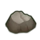
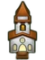
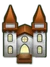
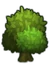
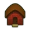
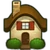
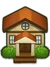

Développement
Premier travail
Le premier travail consistait à utiliser pygame pour créer et dessiner l'interface du jeu. Celle-ci contient la prochaine pièce à positionner, le panier, l'aire de jeu et le score courant . Il a fallu ensuite gérer les événements de la souris afin de déterminer sur quelle case on a cliqué.
Deuxième Travail
Il a fallu ensuite créer les sprites et dessiner les éléments du jeu :
- la pierre () et le rocher (
 ) qui est la réunion d'au moins deux pierres
) qui est la réunion d'au moins deux pierres - l'église () et la basilique () qui est la réunion d'au moins 3 églises
- l'herbe (
 )
) - le buisson (
 ) obtenu avec au moins 3 herbes adjacentes à une case
) obtenu avec au moins 3 herbes adjacentes à une case - l'arbre () obtenu avec au moins 3 buissons adjacents à une case
- la maison () obtenue avec au moins 3 arbres adjacents à une case
- la demeure () obtenue avec au moins 3 maisons adjacentes à une case
- la villa () obtenue avec au moins 3 demeures adjacentes à une case
- le château (
 ) obtenu avec au moins 3 villas adjacentes à une case
) obtenu avec au moins 3 villas adjacentes à une case - le château enchanté (
 ) obtenu avec au moins 2 châteaux adjacents à une case
) obtenu avec au moins 2 châteaux adjacents à une case
Modélisation
Enfin il a fallu effectuer la modélisation de l'aire de jeu dans laquelle on va positionner les pièces, elle est modélisée sous forme d'une matrice. Nous avons donc utiliser la librarie numpy pour représenter les matrices. Nous avons donc ensuite modéliser les éléments du jeu de la façon suivante. Dans notre jeu, un élément est défini par son nom "herbe", son symbole : H et un sprite ou une méthode de dessin